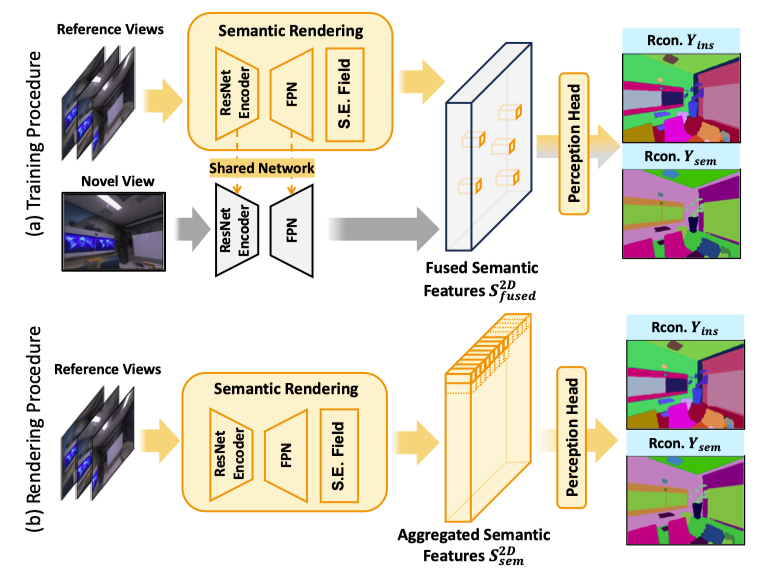

Training and Rendering
Illustration of training(a) and rendering(b) procedure, where S.E. field denotes Semantic-Embedding Field.
Illustration of training(a) and rendering(b) procedure, where S.E. field denotes Semantic-Embedding Field.
2D Semantic Distillation $\mathcal{L}_{\text {S.D}}$ and Depth-Guided Semantic Optimization $\mathcal{L}_{\text {D.G}}$. This figure demonstrates a single raw of our semantic-embedding field. the network "cheat" by rendering all points $\boldsymbol{f}^{sem}_i$ to the same prediction to satisfy $\mathcal{L}_{\text {S.D}}$ supervision. By performing spatial-wise semantic supervision, $\mathcal{L}_{\text {S.D}}$ is able to mitigate the issue of "cheating".
@article{li2024gp,
title={GP-NeRF: Generalized Perception NeRF for Context-Aware 3D Scene Understanding},
author={Li, Hao and Zhang, Dingwen and Dai, Yalun and Liu, Nian and Cheng, Lechao and Li, Jingfeng and Wang, Jingdong and Han, Junwei},
journal={CVPR},
year={2024}
}